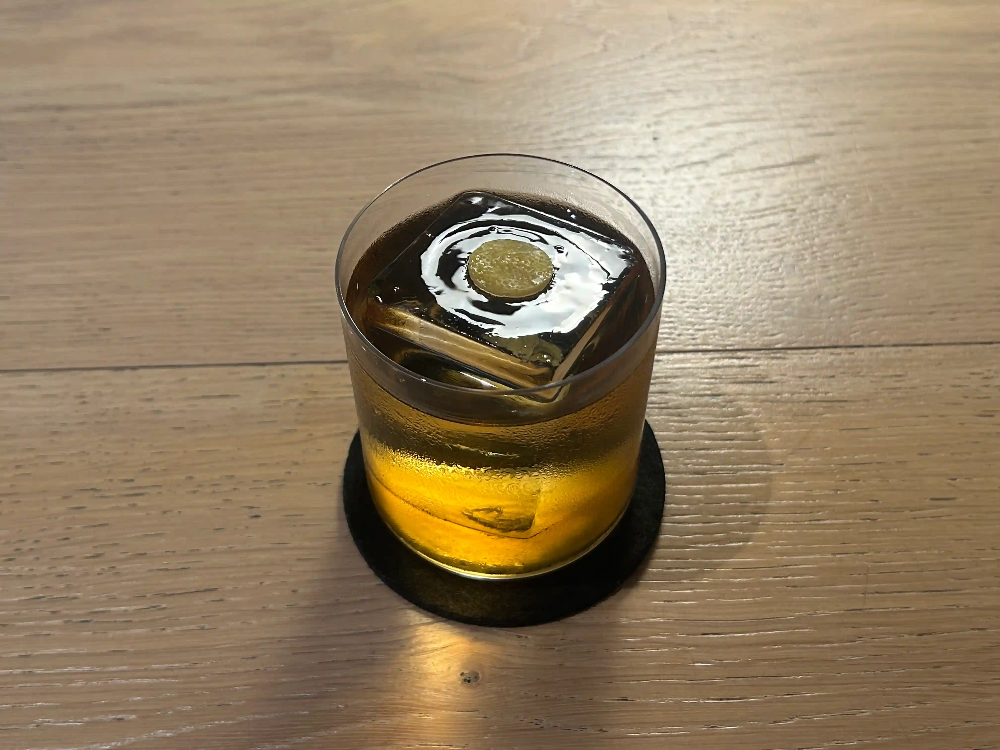

menu
bird is focused on bringing contemporary drinking experiences to our guests via our bottled cocktail program. We bottle all our listed drinks in order to ensure correct balances on flavour and alcohol. Moreover, we believe that
classic bartending has a tendency to put aside the aspect of reliable continuity when we are super busy.
Bottling all our drinks creates an offset for speedy and accurate guest interaction. Moreover, we are able to give our guests the possibility of tasting our drinks in case our descriptions aren’t fulfilling or sufficient.
We try to be as local as possible and use produce from local vendors and suppliers when possible. Our selection of spirits will not be compromised to meet the local objective. Tradition and knowledge is key when producing great distillates
and in this, we select our spirits from what is best and most suitable for our drinks program.
cocktail list

MELON CREAM SODA
PARANUBES RUM : MIDORI : VERMOUTH BLANC : MALIC
ACID : SODA
DKK130 CITRUSY / LIGHT APPLE / CLEANSING

ALBICOCCA
HIGH ESTER RUM : ESPRESSO BEAN INFUSION
APRICOT : FINO SHERRY
DKK130 FRUITY / EXOTIC / SOFT & CLEAN

TUTTO VITO DITTO
TONKA BEAN INFUSION : AMARETTO BIANCO
GRAPEFRUIT
DKK130 GRAPEFRUIT / NUTS / REFRESHING SOUR